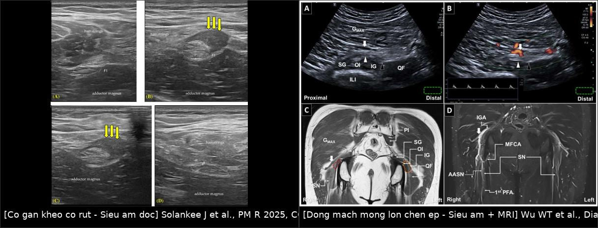
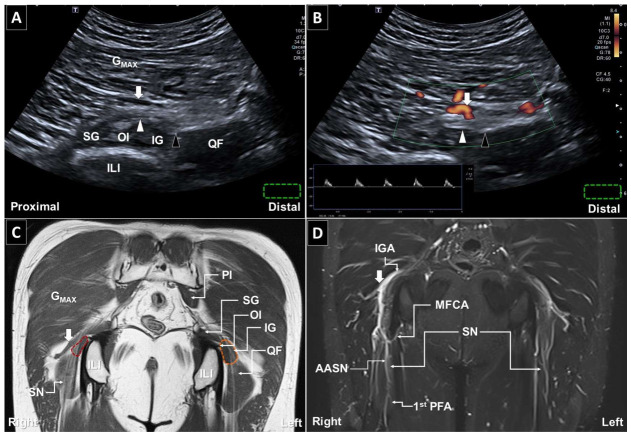
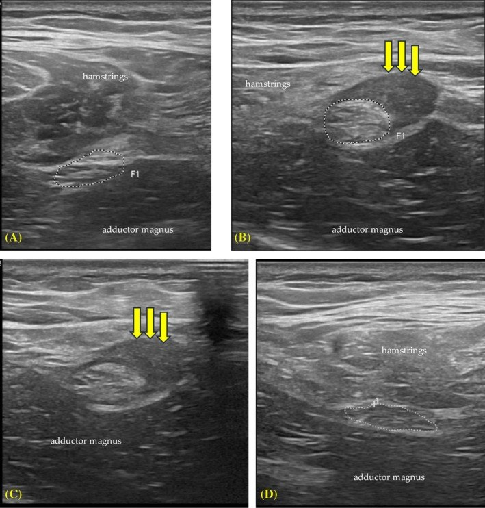
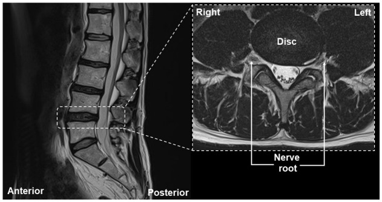

3841 — Chèn ép thần kinh tọa mạn sau chấn thương/mổ: "đau mông sau tái diễn dù gân đã lành" / Chronic sciatic nerve entrapment
Tags: pattern:day-than-kinh pattern:chen-ep-than-kinh pattern:dau-mong-sau vung:chi-duoi vung:mong-sau-dui vung:khop-hang anatomy:than-kinh-toa protocol:MRI-chau protocol:sieu-am-than-kinh score:NRS-11
Mức chắc chắn (certainty): tổng hợp y văn (literature synthesis) — số liệu từ một phân tích 212 ca piriformis/deep gluteal syndrome (BMC Surg 2025, PMCID PMC12512919), một đoàn hệ phẫu thuật 81 ca (2024, PMCID PMC10924905), một loạt 30 ca nội soi khớp giải ép thần kinh tọa (J Orthop Surg Res 2023, PMCID PMC10507890), một nghiên cứu đa phương thức 19 ca (2025, PMCID PMC12397617) và ba ca nguyên văn có ảnh (PMC13256393 — mạch mông dưới; PMC12065090 — sau rách gân kheo; PMC13552143 — cầu thủ tái phát). Không có thử nghiệm ngẫu nhiên; các ngưỡng điều trị là thực hành đồng thuận, chỗ suy luận được ghi rõ.
Câu chốt: chèn ép thần kinh tọa ngoài cột sống (extraspinal) là nguyên nhân hay bị bỏ của đau mông–mặt sau đùi. Ba con số quyết định: (1) trong 212 ca, chỉ 29,7% được xác nhận bằng MRI chậu và 47,6% không có bất kỳ dấu hiệu hình ảnh/nội mổ nào — chẩn đoán không được chỉ dựa vào hình ảnh (PMC12512919); (2) 41,1% đáp ứng điều trị bảo tồn, 58,9% phải mổ, và chẩn đoán không có bằng chứng hình ảnh làm tăng nguy cơ thất bại phẫu thuật OR 5,3 (PMC12512919); (3) khi đã mổ, giải ép đơn thuần thành công 61,7%, nhưng cắt thêm dây chằng cùng–ủng (sacrotuberous ligament) nâng lên 79,4% so với 42,6% (PMC10924905).
1. Tổng quan bệnh học – cơ chế hình ảnh (TẠI SAO)
1.1 Giải phẫu: vì sao "đau mông" lại là bệnh của dây thần kinh
- Thần kinh tọa (sciatic nerve) tạo từ L4–S3, đi ra khỏi khung chậu qua lỗ ngồi lớn (greater sciatic foramen), dưới cơ lê (piriformis) ở 85–90% người; 10–15% có biến thể xuyên cơ lê hoặc trên cơ lê — chính biến thể này là một cơ chế chèn ép.
- Sau khi ra khỏi lỗ ngồi lớn, dây đi qua khoang mông sâu (deep gluteal space) — một khoang ảo có: thành sau là cơ mông lớn, thành trước là mặt sau xương đùi + khớp hông, thành trong là dây chằng cùng–ủng và cùng–gai, thành ngoài là mấu chuyển lớn. Trong khoang này dây thần kinh bắt chéo các cấu trúc: cơ lê, cơ sinh đôi (gemelli), cơ bịt trong, củ ngồi (ischial tuberosity) và gân gốc cơ kheo.
- Xuống đùi, dây chạy giữa cơ khép lớn (adductor magnus) và nhóm cơ kheo, rồi tách thành thần kinh chày và thần kinh mác chung — nơi đây là đoạn dễ đo siêu âm và là mốc tham chiếu kích thước.
- Vì vậy "đau mặt sau đùi" có ba ổ chèn ép khác nhau: trong khoang mông sâu, tại bờ củ ngồi/gân kheo, và dọc đường đi ở đùi sau. Định vị đúng ổ quyết định thái độ điều trị.
1.2 TẠI SAO chèn ép mạn cho hình ảnh "dày + sáng" trên MRI
- Dây thần kinh ngoại biên là ống trụ nhiều bó (fascicle) bọc bởi màng ngoại thần kinh (epineurium); giữa các bó là nội thần kinh (endoneurium) chứa mao mạch và dịch. Khi bị ép mạn tính, áp lực nội dây tăng → ứ máu tĩnh mạch và rối loạn hàng rào máu–thần kinh → phù nội dây. Phù này làm nước tự do tăng → T2/STIR sáng và diện tích cắt ngang (cross-sectional area, CSA) tăng.
- Do phù trong bó làm các bó căng ra, mất mẫu hình "tổ ong/sợi chỉ" (loss of fascicular pattern) — đây là dấu đặc hiệu hơn tăng tín hiệu đơn thuần vì dây bình thường cũng có thể hơi sáng do mỡ nội thần kinh.
- TẠI SAO có ngấm thuốc: khi hàng rào máu–thần kinh vỡ, gadolinium vào khoang nội dây → ngấm thuốc dạng bó ở thì muộn. Ngấm thuốc mạnh gợi viêm/hoạt tính, không gợi mức chèn ép.
- TẠI SAO có teo cơ: chèn ép sợi trục gây thoái hóa Waller phía dưới → cơ do dây chi phối phù trên T2/STIR ở giai đoạn cấp–bán cấp, rồi thay mỡ, teo trên T1 ở giai đoạn mạn. Thấy phù cơ kheo/khép lớn trên STIR là bằng chứng gián tiếp của tổn thương thần kinh đang hoạt động.
- TẠI SAO T1 quan trọng: xơ hóa (fibrosis) và mô sẹo có T1 trung tính–thấp, T2 thấp, không ngấm thuốc; chúng xóa mặt phẳng mỡ quanh thần kinh và dính dây vào cơ/gân. Đây là dấu "tethering" — thứ mà siêu âm động (dynamic ultrasound) thấy rõ hơn MRI tĩnh.
1.3 Ngưỡng định lượng tham chiếu
- CSA thần kinh tọa bình thường trên siêu âm độ phân giải cao (200 người trưởng thành): tại 1 cm trên chỗ tách đôi, nam 0,560 cm² = 56 mm², nữ 0,456 cm² = 45,6 mm²; tại 4 cm trên chỗ tách đôi, nam 42,8 mm², nữ 34,8 mm² (PMC8264619). CSA tương quan thuận với chiều cao (r ≈ 0,92), không tương quan với tuổi → phải so cùng vị trí, cùng bên đối diện, không dùng một con số tuyệt đối cho mọi người.
- Điện sinh lý: trong 19 ca nghi hội chứng mông sâu, 63% có H-reflex tăng thời tiềm (> 1,2 ms) hoặc mất khi làm nghiệm pháp tư thế/gắng sức — trong khi chỉ 2/19 có tiếp xúc rễ thần kinh trên MRI cột sống (PMC12397617). Nói cách khác: MRI cột sống bình thường không loại trừ chèn ép ngoài cột sống.
- Kết cục: thành công phẫu thuật định nghĩa là giảm ≥ 50% điểm đau NRS-11; trong 81 ca đạt 61,7%, mức giảm đau trung bình 43,9 ± 34,2% (PMC10924905).
- Dịch tễ: 212 ca (117 nữ/95 nam), tuổi trung bình 43,6 ± 14,8; 38,2% có chấn thương vùng chậu/hoạt động thể thao mạnh; 9,0% đã mổ cột sống thất bại trước đó (PMC12512919).
2. Mẫu hình + chẩn đoán phân biệt theo vị trí (Gamut)
- Khoang mông sâu – phía sau cơ lê: hội chứng cơ lê (piriformis syndrome), biến thể dây xuyên cơ lê, phì đại cơ lê, cơ sinh đôi–bịt trong dày.
- Khoang mông sâu – phía ngoài: hội chứng chèn ép ụ ngồi–đùi (ischiofemoral impingement) với phù cơ vuông đùi; dây thần kinh tọa nằm ngay sau vùng hẹp nên có thể bị kích thích thứ phát.
- Bờ củ ngồi – gân gốc cơ kheo: hội chứng gân kheo gần, rách/co rút gân kheo tạo sẹo xơ quấn dây — thể hay gặp sau chấn thương thể thao; đây là chủ đề của bài 3840 nhưng phần thần kinh là bài này.
- Mạch máu: động mạch mông dưới (inferior gluteal artery) phì đại/bất thường bắt chéo và đè lên dây — ca nguyên văn PMC13256393; Doppler là chìa khóa phân biệt với dải xơ.
- Dây chằng/xơ: dây chằng cùng–ủng dày, dải xơ sau chấn thương, xơ sau tiêm bắp (post-injection fibrosis), xơ sau mổ háng/mông.
- Trong dây thần kinh: u vỏ bao thần kinh (peripheral nerve sheath tumor), u sợi thần kinh, di căn lan theo dây (perineural spread) — dày hình thoi, liên tục, không theo vị trí giải phẫu hẹp.
- Bắt chước (mimics): bệnh rễ L5/S1, hẹp ống sống, viêm gân kheo đơn thuần, thoái hóa khớp hông, bệnh thần kinh ngoại biên do đái tháo đường, bệnh đám rối thắt lưng–cùng do xạ (bài 1843).
3. Bảng so sánh phân biệt (ma trận đối chiếu)
| Thực thể (entity) | Hình ảnh điển hình (US/MRI) | Chốt vào (rule-in) | Chốt loại (rule-out) | Gợi ý xác nhận |
|---|---|---|---|---|
| Hội chứng cơ lê / chèn ép khoang mông sâu | Dây dày khu trú + T2 sáng ngay sau cơ lê; cơ lê dày/bất đối xứng; không có ổ chèn ép khác | Đau mông sâu tăng khi ngồi lâu/duỗi–xoay trong, FAIR test dương, H-reflex > 1,2 ms | Dây bình thường + không đau khi tư thế → nghĩ nguyên nhân cột sống | US động + MRI chậu 3T; EMG loại rễ |
| Chèn ép do gân kheo co rút/sẹo xơ | Dây dính vào gân kheo co rút, gân mất mẫu hình sợi, cơ kheo phù/teo mỡ; US động thấy dây không trượt | Tiền sử rách gân kheo, đau khi gấp duỗi gối, dấu tụt dây khi co cơ | Gân kheo liên tục, dây trượt bình thường → không phải thể này | US 2 bên cùng mốc (9 cm và 16 cm dưới củ ngồi) |
| Chèn ép do động mạch mông dưới | Cấu trúc ống, có phổ Doppler, bắt chéo dây; MRI thấy mạch phì đại cùng bên | Doppler xác nhận mạch, dây phì đại ngay dưới chỗ bắt chéo, đau giảm sau giải ép/hydrodissection | Không có phổ Doppler → là dải xơ/cơ | Siêu âm Doppler + MRI tương phản |
| Hội chứng ụ ngồi–đùi | Khoảng ụ ngồi–mấu chuyển nhỏ hẹp, cơ vuông đùi phù T2, dây tọa lệch sau | Đau mông khi duỗi–xoay ngoài, hẹp khoảng < 15 mm (ngưỡng tham khảo trên MRI) | Cơ vuông đùi bình thường + dây dày khu trú nơi khác | MRI chậu có lát cắt qua ụ ngồi |
| U vỏ bao thần kinh | Dày hình thoi, bờ rõ, dấu đuôi (tail sign), ngấm thuốc, có thể xâm lấn mô mềm | Khối liên tục theo dây, không đúng vị trí hẹp giải phẫu | Dày đối xứng hai bên, không có khối → không phải u | MRI có tương phản + sinh thiết nếu cần |
| Bệnh rễ L5/S1 | Rễ bị chèn trong lỗ liên hợp/ống sống, dây ngoài cột sống bình thường | Đau theo dermatome, nghiệm pháp Lasègue, EMG có tổn thương rễ | MRI cột sống bình thường không loại trừ chèn ép ngoài cột sống | MRI cột sống + EMG; nếu âm → khảo sát mông sâu |

Trái: siêu âm dọc — dây thần kinh tọa bị gân kheo co rút + sẹo xơ giữ chặt (mũi tên vàng), cơ kheo mất mẫu hình. Phải: siêu âm dọc + Doppler — động mạch mông dưới bắt chéo gây chèn ép khu trú, kèm MRI coronal T1 cho thấy mạch phì đại. Nguồn: Solankee J et al., PM R 2025 (PMC12065090), CC BY 4.0; Wu WT et al., Diagnostics 2026 (PMC13256393), CC BY 4.0. Ảnh ghép letterbox, không crop.Dấu hiệu "tethering" trên siêu âm động — cách đọc
- Đặt đầu dò dọc trục dây tại 9 cm và 16 cm dưới củ ngồi (mốc chuẩn của PMC12065090), cho bệnh nhân co–duỗi gối chủ động. Bình thường dây trượt lên xuống độc lập với cơ kheo; khi có sẹo, dây bị kéo theo cơ và không trượt — dấu này có giá trị hơn đo CSA đơn thuần.
- So sánh bên đối diện ở đúng cùng mốc — vì CSA phụ thuộc chiều cao (r ≈ 0,92) và giới.
4. Protocol chụp + ngưỡng phân tầng điều trị
4.1 MRI chậu – đùi (3T là ưu tiên)
- Phạm vi: từ L4 đến dưới mấu chuyển nhỏ — đủ để thấy đám rối, lỗ ngồi lớn, khoang mông sâu và đoạn đùi trên.
- Chuỗi xung tối thiểu: axial T1 (3 mm) + axial T2 fat-sat/STIR (3 mm) + coronal T1 + coronal STIR + sagittal T1/T2. Thêm 3D STIR SPACE 1 mm khi cần tái tạo theo trục dây (MR neurography).
- DTI (khi có): b = 800–1.000, 12–20 hướng; đọc FA và độ khuếch tán (diffusivity). Trong nghiên cứu 19 ca, độ khuếch tán tăng ở bên có triệu chứng trong khi FA không khác biệt (P = 0,913) — nghĩa là FA đơn thuần không đủ, phải đọc kèm hình thái (PMC12397617).
- Tương phản: bắt buộc khi nghi u, nhiễm trùng, thay đổi sau mổ; không cần thường quy cho chèn ép cơ học đơn thuần.
- Cạm bẫy kim loại: sau mổ háng/khớp háng, dùng chuỗi xung giảm nhiễu kim loại (metal artifact reduction, MAVRIC/SEMAC) và tăng băng thông; không kết luận dây đứt chỉ vì nhiễu.
4.2 Siêu âm thần kinh – cơ (đầu dò cao tần)
- Đầu dò: linear 10–18 MHz cho đoạn đùi; 4–8 MHz hoặc convex cho khoang mông sâu ở người béo.
- Trình tự: (1) xác định củ ngồi và mấu chuyển lớn; (2) dây ở trục ngắn hình "tổ ong"; (3) đo CSA bằng trace thủ công; (4) Doppler phân biệt mạch; (5) động để tìm tethering; (6) lặp lại bên đối diện.
- Ngưỡng tham chiếu: CSA 56 mm² (nam) / 45,6 mm² (nữ) tại 1 cm trên chỗ tách đôi; 42,8 / 34,8 mm² tại 4 cm trên (PMC8264619). Tăng rõ so với bên đối diện + mất mẫu hình bó mới đáng kể.
4.3 Điện sinh lý
- EMG/NCS để loại bệnh rễ và bệnh đa dây thần kinh; H-reflex với nghiệm pháp tư thế (gấp–khép–xoay trong) — thời tiềm > 1,2 ms hoặc mất gặp ở 63% ca hội chứng mông sâu (PMC12397617).
- EMG bình thường không loại trừ chèn ép mạn mức độ nhẹ — vì vậy cần kết hợp hình ảnh động.
4.4 Ngưỡng quyết định điều trị
| Bước | Ngưỡng / số liệu | Nguồn |
|---|---|---|
| Điều trị bảo tồn trước | Vật lý trị liệu, giãn cơ, tiêm hướng dẫn siêu âm; 41,1% khỏi | PMC12512919 |
| Khi nào cân nhắc mổ | Thất bại bảo tồn ≥ 3–6 tháng + có bằng chứng chèn ép trên US/MRI/EMG | PMC12512919, PMC10507890 |
| Kết quả giải ép | 61,7% giảm ≥ 50% NRS-11; cắt thêm dây chằng cùng–ủng: 79,4% vs 42,6% | PMC10924905 |
| Kết quả nội soi khớp | 30 ca: VAS 5,0 → 0,5; mHHS 64 → 95; tốt/rất tốt 90% | PMC10507890 |
| Cảnh báo | Chẩn đoán không có bằng chứng hình ảnh → OR thất bại 5,3 | PMC12512919 |
flowchart TD
A[Đau mông sau lan mặt sau đùi > 3 tháng] --> B[MRI cột sống thắt lưng]
B -->|Có chèn ép rễ rõ| C[Điều trị theo bệnh rễ]
B -->|Không tương xứng| D[Siêu âm thần kinh tọa + Doppler, so hai bên]
D --> E{Có dày khu trú / mất mẫu hình bó / tethering?}
E -->|Có| F[MRI chậu 3T + DTI; EMG/H-reflex tư thế]
E -->|Không| G[EMG/H-reflex tư thế + khám động tác]
G -->|H-reflex > 1,2 ms hoặc mất| F
F --> H{Bảo tồn 3-6 tháng thất bại?}
H -->|Không| I[Tiếp tục bảo tồn + theo dõi]
H -->|Có| J[Giải ép: nội soi / mở, xét cắt dây chằng cùng-ủng]
5. Biến thể bình thường và cạm bẫy
- Biến thể đường đi: dây xuyên cơ lê hoặc trên cơ lê ở 10–15% — bản thân biến thể không phải bệnh; chỉ có ý nghĩa khi dày + sáng khu trú đúng chỗ bắt chéo và lâm sàng tương ứng.
- Cạm bẫy 1 — "MRI cột sống bình thường = không có bệnh": trong 19 ca nghi mông sâu, chỉ 2 ca có tiếp xúc rễ trên MRI cột sống (PMC12397617). Bình thường cột sống không loại trừ chèn ép ngoài cột sống.
- Cạm bẫy 2 — chẩn đoán bằng hình ảnh đơn thuần: 47,6% ca trong y văn không có dấu hiệu hình ảnh/nội mổ; chẩn đoán ca đó vẫn có thể đúng nhưng nguy cơ thất bại mổ OR 5,3 → phải có nghiệm pháp lâm sàng + điện sinh lý trước khi mổ (PMC12512919).
- Cạm bẫy 3 — đo CSA không so bên: CSA phụ thuộc chiều cao (r ≈ 0,92); dùng ngưỡng tuyệt đối sẽ gọi dày oan ở người cao và bỏ sót ở người thấp (PMC8264619).
- Cạm bẫy 4 — tăng tín hiệu T2 đơn thuần: dây bình thường có thể hơi sáng do mỡ nội thần kinh; chỉ tính khi mất mẫu hình bó + dày + bất đối xứng.
- Cạm bẫy 5 — gân kheo co rút giả dây to: cơ/gân co rút đẩy dây ra sau, trên lát cắt ngang dây trông to hơn; dùng siêu âm dọc trục + động để phân biệt.
- Cạm bẫy 6 — bỏ sót u: dày hình thoi, bờ rõ, ngấm thuốc, có tail sign → phải loại u vỏ bao thần kinh trước khi gọi "chèn ép lành tính".
- Cạm bẫy 7 — sau mổ: nhiễu kim loại + thay đổi tín hiệu do mổ có thể giả dày dây; so với phim nền và dùng chuỗi xung giảm nhiễu.
6. Tự lượng giá — Blind Quiz
Ca 1 — Nam 45 tuổi, đau mông phải lan mặt sau đùi > 2 năm, đã tiêm/giãn cơ nhiều lần không đỡ. Siêu âm và MRI dưới đây:

- Câu hỏi: cấu trúc bắt chéo dây là mạch hay dải xơ? Dấu hiệu nào trên siêu âm chứng minh? Dây thần kinh thay đổi ra sao ngay dưới chỗ bắt chéo?
Bấm để hiện đáp án
- Cấu trúc bắt chéo là động mạch: hình ống, có phổ Doppler (ô B), bắt chéo và đè lên dây thần kinh tọa (mũi tên trắng); đây là động mạch mông dưới bất thường.
- Dây thần kinh phì đại khu trú ngay dưới chỗ chèn ép (đầu mũi tên đen), kèm tăng tín hiệu trên MRI.
- MRI coronal T1 (C) và T1 sau tiêm (D) cho thấy mạch phì đại bên phải so với bên trái (vòng cam).
- Điều trị trong ca gốc: hydrodissection hướng dẫn siêu âm bằng dextrose 5% + lidocaine; đau 7 → 3, hết triệu chứng sau 2 tháng.
- Nguồn: Wu WT et al., Diagnostics 2026 (PMC13256393), CC BY 4.0.
Ca 2 — Nam 33 tuổi, cầu thủ bóng đá, "rách gân kheo" tái diễn 12 tháng, MRI gân đã lành nhưng vẫn đau sâu mặt sau đùi:

- Câu hỏi: vì sao MRI gân "lành" mà vẫn đau? Dấu hiệu nào trên siêu âm chỉ ra nguyên nhân thật?
Bấm để hiện đáp án
- (A) dây thần kinh tọa bên phải không triệu chứng — kích thước và mẫu hình bình thường.
- (B) dây bên trái phì đại; cơ kheo co rút, tăng âm và mất cấu trúc cơ; mô sẹo giảm âm (mũi tên vàng) dính chặt dây thần kinh vào gân kheo co rút.
- (C, D) cùng dây ở 16 cm dưới củ ngồi: vẫn thấy dính và mất trượt — tương ứng tethering.
- Chẩn đoán: chèn ép thần kinh tọa do sẹo gân kheo co rút — tổn thương ngoài dây, nên MRI gân "lành" không loại trừ.
- Nguồn: Solankee J et al., PM R 2025 (PMC12065090), CC BY 4.0.
Ca 3 — Nữ 52 tuổi, đau mông–đùi phải 8 tháng, MRI thắt lưng dưới đây. Chẩn đoán là gì và bước tiếp theo?

- Câu hỏi: hình ảnh có giải thích được triệu chứng không? Cần khảo sát gì tiếp?
Bấm để hiện đáp án
- MRI thắt lưng: thoát vị đĩa đệm L4–L5 nhỏ, không chèn ép rễ thần kinh, không rách vòng sợi; các lát L3–S1 không có tổn thương rễ đáng kể.
- Hình ảnh không tương xứng với đau lan mặt sau đùi → nghi chèn ép ngoài cột sống (hội chứng mông sâu / gân kheo / mạch).
- Bước tiếp: siêu âm thần kinh tọa + Doppler so hai bên, MRI chậu 3T, EMG/H-reflex có nghiệm pháp tư thế.
- Nguồn: Wu WT et al., Diagnostics 2026 (PMC13256393), CC BY 4.0.
Bài liên quan chéo
- 300 – Tổng quan hệ Cơ – Xương – Khớp
- 3840 – Rách & đứt gân gốc cơ gân kheo (biến chứng thần kinh tọa 1,7%; cùng gamut đau mông sau)
- 382 – Hội chứng ụ ngồi–đùi (ischiofemoral impingement) (chèn ép cơ học lân cận)
- 1843 – Bệnh rễ đám rối thần kinh do xạ (đau–yếu chi dưới sau xạ)
- 3101 – Hội chứng CHANTER (đau mông sau do nguyên nhân mạch máu)
Ảnh
3841_chen-ep-than-kinh-toa_SieuAm_MRI_PMC13256393.jpg— siêu âm dọc B-mode/Doppler + MRI coronal T1: động mạch mông dưới chèn ép dây tọa.3841_chen-ep-than-kinh-toa_SieuAm_PMC12065090.jpg— siêu âm 4 ô: dây bình thường vs phì đại + sẹo gân kheo.3841_chen-ep-than-kinh-toa_MRI-cot-song_PMC13256393.jpg— MRI thắt lưng: thoát vị nhỏ không chèn ép rễ (dùng cho cạm bẫy).3841_chen-ep-than-kinh-toa_Mo_PMC12065090.jpg— ảnh mổ: dây dính chặt cơ kheo.composite_chan-doan.jpg— ảnh ghép letterbox 2 cơ chế (CC BY 4.0).- Chi tiết nguồn + giấy phép từng ảnh:
images/CREDITS.md.
Không dùng để chẩn đoán độc lập khi chưa có người hướng dẫn.